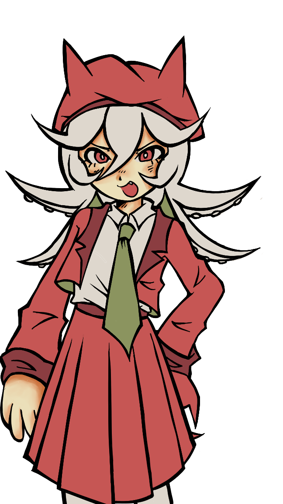
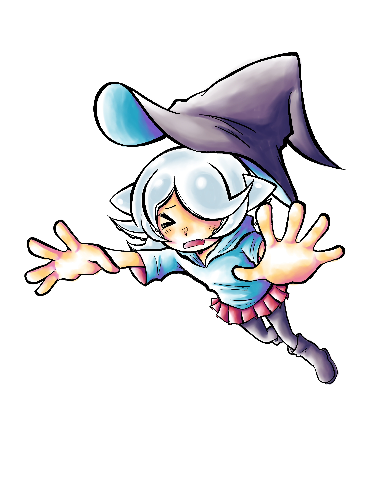
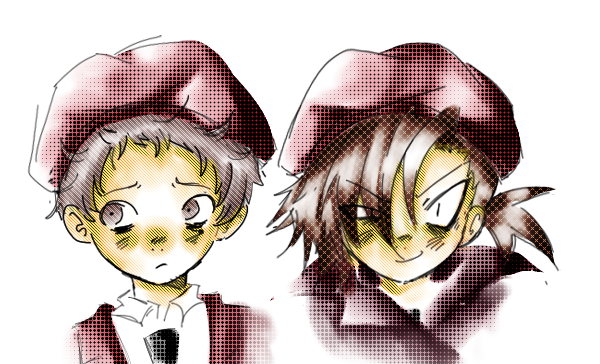
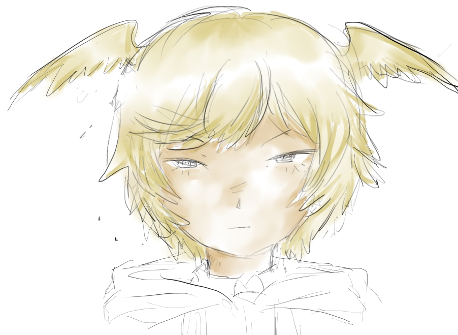

Glizzy tan
Personajes
Glizzy tan Stendra Paya y Eina LazaroGlizzy tan

Glizzy (quien usa el apodo autoproclamado de Glizzy-tan) es una chica mitad lovecraftiana y mitad crustáceo. Es muy energética y alegre, pero vive en su propio mundo y no tiene nada de tacto social.Tanto así que hace y dice cosas que dan mucha pena en público. Por lo general, es bastante incómodo hablar con ella. También tiene muy poca empatía, así que a veces llega a ser cruel, pero casi nunca es intencional, ya que no es una persona maliciosa. Ama el anime y el manga con todo su kokoro, por lo que gran parte de su vocabulario incluye palabras y frases en japonés que dan cringe.
Stendra

Stendra es la prima chica de Glizzy Tan, tiene 11 años y se cree hechicera. Se toma en serio a ella misma, pero es como ese primito que te pide prestado el celular en reuniones familiares. Por lo general es bien callada y seria, pero más que nada es porque no sabe cómo expresarse. Vivió la mayoría de su vida encerrada en su cuarto ahí en el mundo lovecraftiano, así que es más "especial" que el niño promedio.
Eina y Paya

Eina es el mejor amigo de Paya. Es un chavo promedio de prepa, un poco cobarde y muy susceptible a la presión social. Bueno, más que nada a la presión social de Paya. Lo que Paya quiere hacer, Eina también lo hace, a veces aunque no quiera. También es pobre, de origen humilde.
Paya es una compañerita de Glizzy-tan. Le da un mucho asco cómo es Glizzy-tan, todo todo, desde cómo habla, su personalidad y su forma de vestir, hasta su especie. Así que, básicamente, es la principal tormentadora de Glizzy-tan. Sin embargo, aunque se burle de Glizzy-tan por ser una perdedora, Paya es exactamente igual de perdedora.
Lazaro

Lazaro es un compañero de Glizzy-tan. Se la pasa durmiendo en clase y nomás habla cuando le hablan. Tiene la personalidad de un cartón mojado, siempre es apático y le da flojera todo. Pero, de alguna manera, es popular con sus compañeros y todos lo quieren. Aunque es antisocial y da las respuestas más secas en las conversaciones, Glizzy-tan, como los demás, lo ve muy lindo y carismático, ¡¡¡y se enamoró de él a primera vista!!!